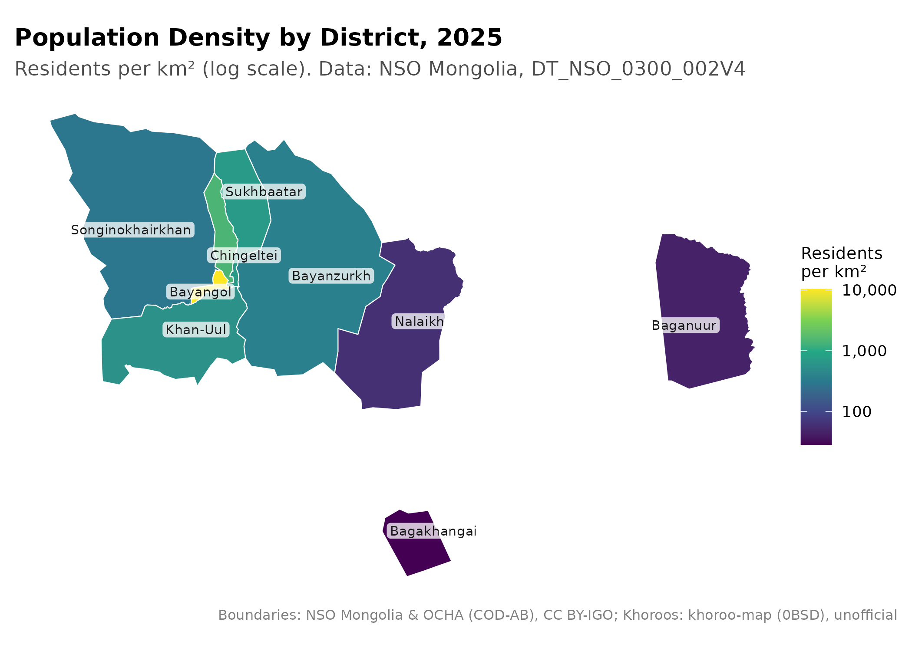
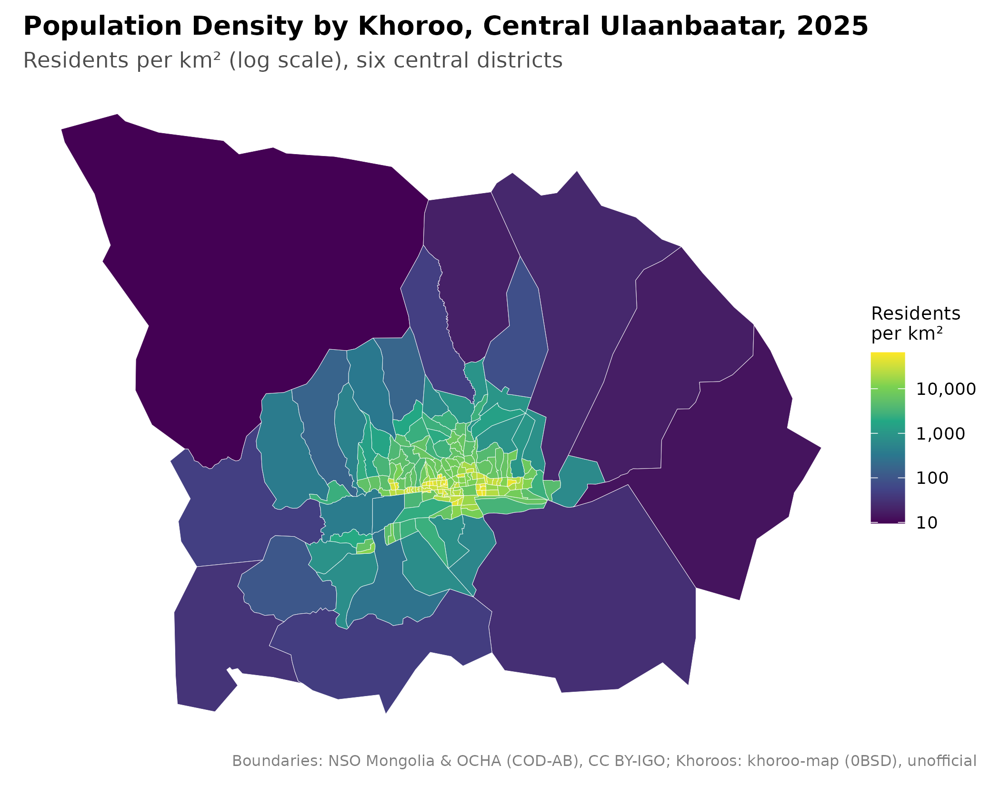
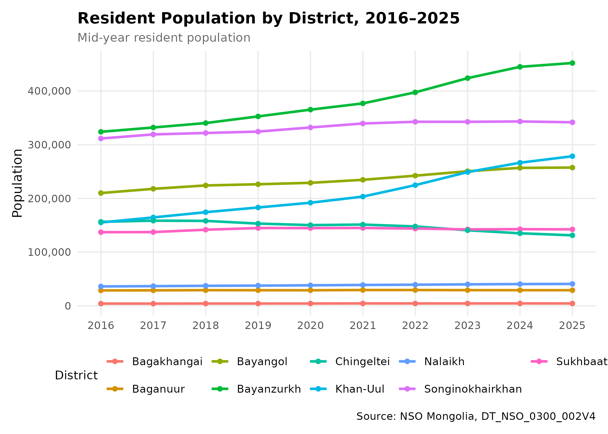
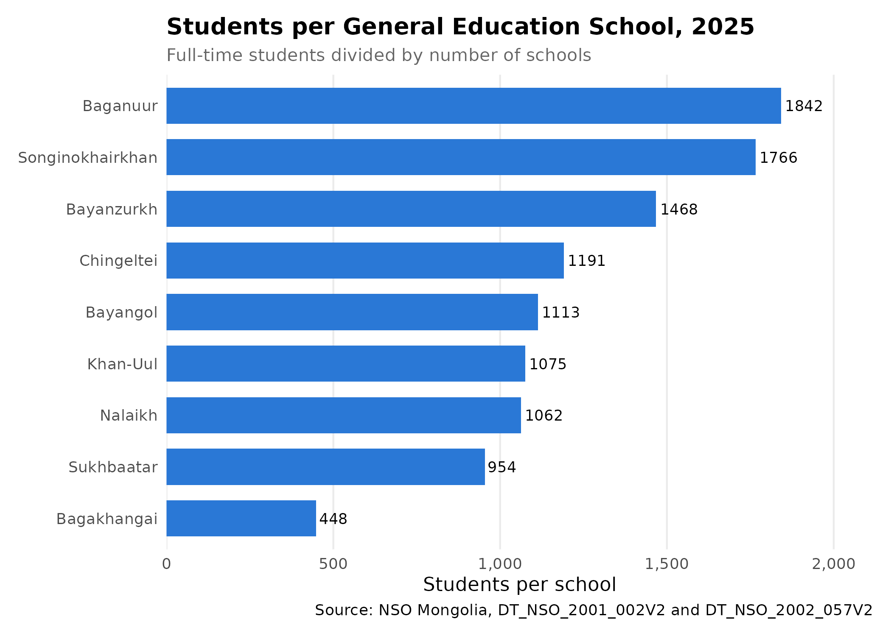
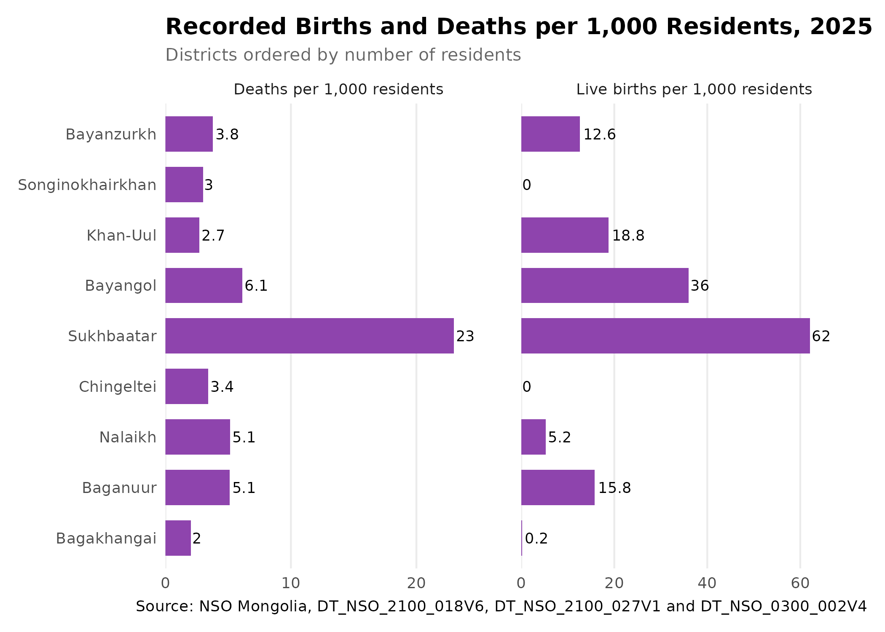
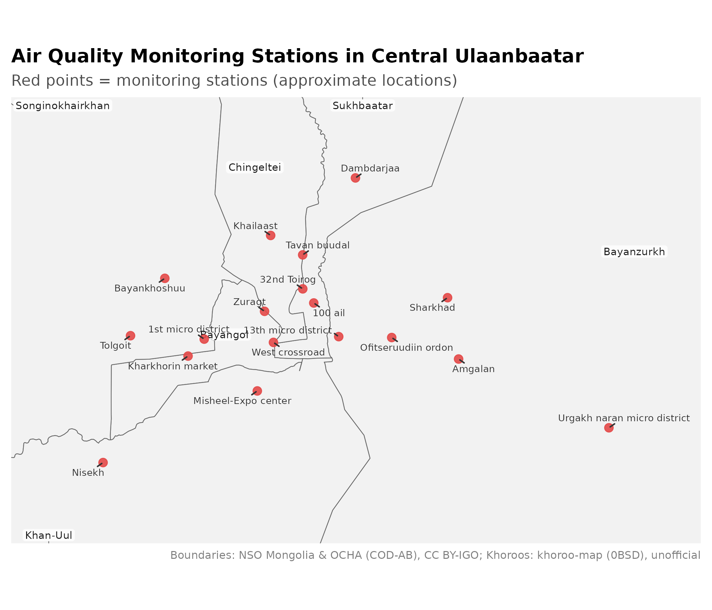
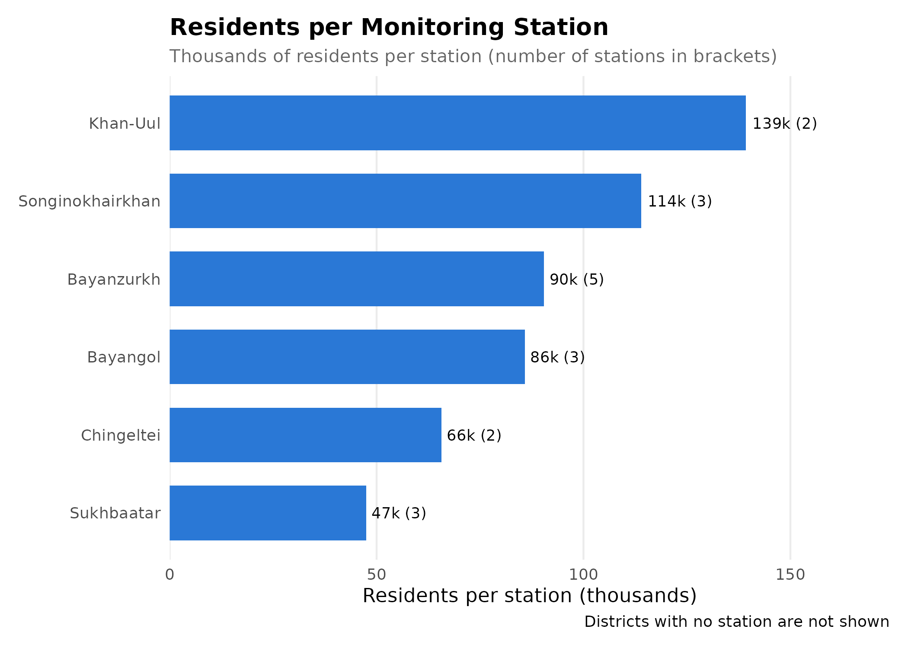

Ulaanbaatar District-Level Analysis
Source:vignettes/ub-health-environment.Rmd
ub-health-environment.Rmd
library(mongolstats)
library(mongolmaps)
library(dplyr)
library(ggplot2)
library(sf)
library(tidyr)
nso_options(mongolstats.lang = "en")
# Global theme with proper margins to prevent text cutoff
theme_set(
theme_minimal(base_size = 11) +
theme(
plot.margin = margin(10, 10, 10, 10),
plot.title = element_text(size = 13, face = "bold"),
plot.subtitle = element_text(size = 10, color = "grey40"),
legend.text = element_text(size = 9),
legend.title = element_text(size = 10)
)
)Introduction
Ulaanbaatar, the capital of Mongolia, is home to about half of the country’s population. This vignette looks at its nine districts (duureg) using NSO tables published “by soum and district”: population and growth, school capacity, the air quality monitoring network, and the limits of district-level health statistics.
Districts and Their Codes
mongolmaps provides the district boundaries with their NSO codes and areas, so NSO tables join without matching names.
ub_districts <- mn_ub_districts()
ub_districts |>
st_drop_geometry() |>
select(name, nso_code, area_km2)
#> # A tibble: 9 × 3
#> name nso_code area_km2
#> <chr> <chr> <dbl>
#> 1 Baganuur 51101 625.
#> 2 Bagakhangai 51104 156.
#> 3 Bayangol 51107 24.8
#> 4 Bayanzurkh 51110 1237.
#> 5 Nalaikh 51113 689.
#> 6 Songinokhairkhan 51116 1204.
#> 7 Sukhbaatar 51119 211.
#> 8 Khan-Uul 51122 498.
#> 9 Chingeltei 51125 91.1
# Fetch an NSO table for the nine districts only
get_ub_data <- function(tbl_id, selections = list()) {
nso_data(
tbl_id,
selections = c(list(Region = ub_districts$nso_code), selections),
labels = "en"
) |>
mutate(District = trimws(Region_en))
}
# Latest year a table covers
latest_year <- function(tbl_id) {
max(nso_dim_values(tbl_id, "Year", labels = "en")$label_en)
}1. Demographic Profile
Population Density
The population table DT_NSO_0300_002V4 gives the
mid-year resident population down to khoroo level. (This table id names
two tables in the catalogue; mongolstats warns and uses the first match,
which is the khoroo-level table and also includes the districts.)
pop_tbl <- "DT_NSO_0300_002V4"
pop_year <- latest_year(pop_tbl)
pop_data <- get_ub_data(pop_tbl, list(Year = pop_year))
ub_pop_map <- pop_data |>
mn_join(by = "Region", level = "soum", within = "Ulaanbaatar") |>
mutate(density = value / area_km2) # residents per km2
mn_map(
ub_pop_map,
fill = density, trans = "log10", label = TRUE,
title = paste0("Population Density by District, ", pop_year)
) +
labs(
subtitle = "Residents per km² (log scale). Data: NSO Mongolia, DT_NSO_0300_002V4",
fill = "Residents\nper km²"
)
Bayangol is the densest district, with about 10,400 residents per km². Bagakhangai is the least dense, at about 28 per km². Districts such as Bayanzurkh and Songinokhairkhan include large areas of mountain and pasture, so a district average hides very dense neighbourhoods. Khoroo-level data show more detail:
khoroo_codes <- nso_dim_values(pop_tbl, "Region")$code |>
stringr::str_subset("^511\\d{4}$") # seven-digit codes are khoroos
khoroo_pop <- nso_data(
pop_tbl,
selections = list(Region = khoroo_codes, Year = pop_year),
labels = "en"
) |>
mn_join(by = "Region", level = "bag", within = "Ulaanbaatar")
central <- c("Bayangol", "Bayanzurkh", "Chingeltei", "Khan-Uul", "Songinokhairkhan", "Sukhbaatar")
mn_map(
filter(khoroo_pop, parent_pcode %in% ub_districts$pcode[ub_districts$name %in% central]),
fill = value / area_km2, trans = "log10",
title = paste0("Population Density by Khoroo, Central Ulaanbaatar, ", pop_year)
) +
labs(subtitle = "Residents per km² (log scale), six central districts", fill = "Residents\nper km²")
The khoroo boundaries in mongolmaps come from an open project that does not state their source, so treat them as unofficial.
Population Growth Trends
Rapid growth can strain local health and school services.
trend_years <- as.character(as.integer(pop_year) - 9:0)
pop_trend <- get_ub_data(pop_tbl, list(Year = trend_years)) |>
mutate(Year = as.integer(Year_en))
pop_trend |>
ggplot(aes(x = Year, y = value, color = District)) +
geom_line(linewidth = 1) +
geom_point(size = 1.5) +
scale_y_continuous(labels = scales::label_comma()) +
scale_x_continuous(breaks = as.integer(trend_years)) +
labs(
title = paste0("Resident Population by District, ", min(trend_years), "–", max(trend_years)),
subtitle = "Mid-year resident population",
y = "Population", x = NULL, color = "District",
caption = "Source: NSO Mongolia, DT_NSO_0300_002V4"
) +
theme(legend.position = "bottom", panel.grid.minor = element_blank())
Over these 10 years, Khan-Uul grew fastest (+79%), followed by Bayanzurkh (+40%). Chingeltei changed the least (-16%). Growth this uneven means services planned on older population figures may now be under strain in the fastest-growing districts.
2. School Capacity
NSO publishes few socioeconomic indicators by district. The number of students per general education school gives a rough measure of pressure on public services.
edu_year <- latest_year("DT_NSO_2002_057V2")
schools <- get_ub_data("DT_NSO_2001_002V2", list(Year = edu_year)) |>
select(District, Schools = value)
students <- get_ub_data("DT_NSO_2002_057V2", list(Year = edu_year)) |>
select(District, Students = value)
edu_load <- inner_join(schools, students, by = join_by(District)) |>
mutate(Students_Per_School = Students / Schools)
ggplot(edu_load, aes(x = Students_Per_School, y = reorder(District, Students_Per_School))) +
geom_col(fill = "#2a78d6", width = 0.7) +
geom_text(aes(label = round(Students_Per_School)), hjust = -0.1, size = 3) +
scale_x_continuous(labels = scales::label_comma(), expand = expansion(mult = c(0, 0.15))) +
labs(
title = paste0("Students per General Education School, ", edu_year),
subtitle = "Full-time students divided by number of schools",
x = "Students per school", y = NULL,
caption = "Source: NSO Mongolia, DT_NSO_2001_002V2 and DT_NSO_2002_057V2"
) +
theme(panel.grid.major.y = element_blank(), panel.grid.minor = element_blank())
Schools differ in size and shift system, so a high ratio points to crowding but does not measure it directly.
3. Health Statistics by District: A Caution
Rates need a numerator and a denominator for the same population. NSO’s district tables count residents by where they live, but births and deaths can be counted where they happen, which is often a hospital in another district. A quick check is to divide each district’s births and deaths by its residents:
vital_year <- latest_year("DT_NSO_2100_027V1")
births <- get_ub_data(
"DT_NSO_2100_018V6",
list(Indicator = "0", Year = vital_year) # Indicator "0" = both sexes
) |>
select(District, count = value) |>
mutate(measure = "Live births per 1,000 residents")
deaths <- get_ub_data(
"DT_NSO_2100_027V1",
list(Indicator = "0", Year = vital_year) # Indicator "0" = all deaths
) |>
select(District, count = value) |>
mutate(measure = "Deaths per 1,000 residents")
residents <- get_ub_data(pop_tbl, list(Year = vital_year)) |>
select(District, residents = value)
vital_rates <- bind_rows(births, deaths) |>
inner_join(residents, by = join_by(District)) |>
mutate(rate = count / residents * 1000)
vital_rates |>
ggplot(aes(x = rate, y = reorder(District, residents))) +
geom_col(fill = "#8e44ad", width = 0.7) +
geom_text(aes(label = round(rate, 1)), hjust = -0.1, size = 3) +
facet_wrap(~measure, scales = "free_x") +
scale_x_continuous(expand = expansion(mult = c(0, 0.2))) +
labs(
title = paste0("Recorded Births and Deaths per 1,000 Residents, ", vital_year),
subtitle = "Districts ordered by number of residents",
x = NULL, y = NULL,
caption = "Source: NSO Mongolia, DT_NSO_2100_018V6, DT_NSO_2100_027V1 and DT_NSO_0300_002V4"
) +
theme(panel.grid.major.y = element_blank(), panel.grid.minor = element_blank())
These numbers cannot describe the residents. Songinokhairkhan, with 341,746 residents, recorded 0 live births in 2025, while Sukhbaatar recorded 62 per 1,000 residents. Recorded deaths range from 2 per 1,000 residents in Bagakhangai to 23 in Sukhbaatar. The pattern fits counting by place of occurrence: births and deaths are recorded in the districts that have maternity and general hospitals, not in the districts where the mother or the person who died lived.
So district-level rates built from these tables, such as infant mortality or deaths from respiratory disease per 10,000 residents, mix up where people live with where hospitals are. Correlating them with district density or other indicators would produce misleading results. For district comparisons, use data coded by place of residence, which may need a request to the Health Development Center or NSO. City-wide rates for Ulaanbaatar as a whole are less affected, though referrals of patients from the aimags to the capital’s hospitals still raise its counts.
4. Air Quality Monitoring Network
Station-level air quality data (see the Environmental Analysis vignette) can only be linked to people if we know where the stations are. NSO does not publish station coordinates, so the table below lists approximate locations for 18 Ulaanbaatar stations, compiled from public station listings, including the World Air Quality Index project (api.waqi.info). Check them before using them for exposure assignment.
ub_aq_stations <- tribble(
~Station, ~Latitude, ~Longitude,
"Misheel-Expo center", 47.89428, 106.8825,
"West crossroad", 47.91576, 106.8940,
"1st micro district", 47.91798, 106.8481,
"13th micro district", 47.91761, 106.9374,
"32nd Toirog", 47.939333, 106.914333,
"Ofitseruudiin ordon", 47.916611, 106.972556,
"Kharkhorin market", 47.910583, 106.837111,
"Urgakh naran micro district", 47.873778, 107.115028,
"Dambdarjaa", 47.988250, 106.951167,
"Khailaast", 47.963528, 106.893889,
"Tolgoit", 47.920278, 106.799250,
"Zuragt", 47.92973, 106.8886,
"Amgalan", 47.906250, 107.016556,
"Nisekh", 47.86394, 106.7791,
"Tavan buudal", 47.954500, 106.914833,
"Bayankhoshuu", 47.945528, 106.822917,
"Sharkhad", 47.93375, 107.0103,
"100 ail", 47.93291, 106.9214
)
# Assign each station to the district polygon it falls in
ub_stations_sf <- ub_aq_stations |>
st_as_sf(coords = c("Longitude", "Latitude"), crs = 4326) |>
st_join(select(ub_districts, District = name))
# Station count for every district, including those with none
station_count <- ub_districts |>
st_drop_geometry() |>
select(District = name) |>
left_join(count(st_drop_geometry(ub_stations_sf), District, name = "Stations"), by = join_by(District)) |>
mutate(Stations = coalesce(Stations, 0L)) |>
arrange(desc(Stations))
knitr::kable(station_count, caption = "Air quality monitoring stations by district")| District | Stations |
|---|---|
| Bayanzurkh | 5 |
| Bayangol | 3 |
| Songinokhairkhan | 3 |
| Sukhbaatar | 3 |
| Khan-Uul | 2 |
| Chingeltei | 2 |
| Baganuur | 0 |
| Bagakhangai | 0 |
| Nalaikh | 0 |
Stations are assigned by their coordinates, using mongolmaps’ simplified district boundaries. A station within a few hundred metres of a district border may fall on the other side.
Spatial Distribution
# Zoom to the stations, with a 3 km margin, in UTM zone 48N (metres)
utm48n <- 32648
station_box <- ub_stations_sf |>
st_transform(utm48n) |>
st_buffer(3000) |>
st_bbox()
mn_map(filter(ub_districts, name %in% central), label = TRUE, crs = utm48n,
title = "Air Quality Monitoring Stations in Central Ulaanbaatar") +
geom_sf(data = ub_stations_sf, color = "#e34948", size = 2.5, alpha = 0.9) +
ggrepel::geom_text_repel(
data = ub_stations_sf, aes(label = Station, geometry = geometry), stat = "sf_coordinates",
size = 2.4, color = "grey20", min.segment.length = 0, seed = 1
) +
coord_sf(
crs = utm48n, datum = NA,
xlim = station_box[c("xmin", "xmax")], ylim = station_box[c("ymin", "ymax")]
) +
labs(subtitle = "Red points = monitoring stations (approximate locations)")
Coverage
station_coverage <- station_count |>
left_join(select(pop_data, District, Population = value), by = join_by(District)) |>
mutate(Pop_per_Station = if_else(Stations > 0, Population / Stations, NA_real_))
station_coverage |>
filter(Stations > 0) |>
ggplot(aes(x = Pop_per_Station / 1000, y = reorder(District, Pop_per_Station))) +
geom_col(fill = "#2a78d6", width = 0.7) +
geom_text(aes(label = paste0(round(Pop_per_Station / 1000), "k (", Stations, ")")), hjust = -0.1, size = 3) +
scale_x_continuous(expand = expansion(mult = c(0, 0.25))) +
labs(
title = "Residents per Monitoring Station",
subtitle = "Thousands of residents per station (number of stations in brackets)",
x = "Residents per station (thousands)", y = NULL,
caption = "Districts with no station are not shown"
) +
theme(panel.grid.major.y = element_blank(), panel.grid.minor = element_blank())
3 districts, Baganuur, Bagakhangai, and Nalaikh, have no station in this network. About 74,000 residents (4% of the city) live there. Residents per station is a crude measure: pollution varies with distance from sources and with terrain, so the location of stations matters as much as their number. The ger areas on the city’s northern and eastern edges, where most household coal and wood burning happens, are where denser monitoring would add the most to exposure estimates.
Conclusion
Ulaanbaatar’s districts differ widely in density, growth and school capacity, and NSO’s district tables plus mongolmaps’ boundaries make these differences easy to map. Health outcomes are harder: published district births and deaths follow hospital locations, so district-level rates need data coded by place of residence before they can guide local public health action.